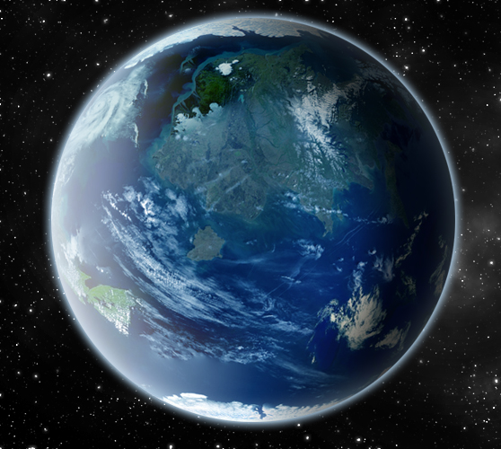
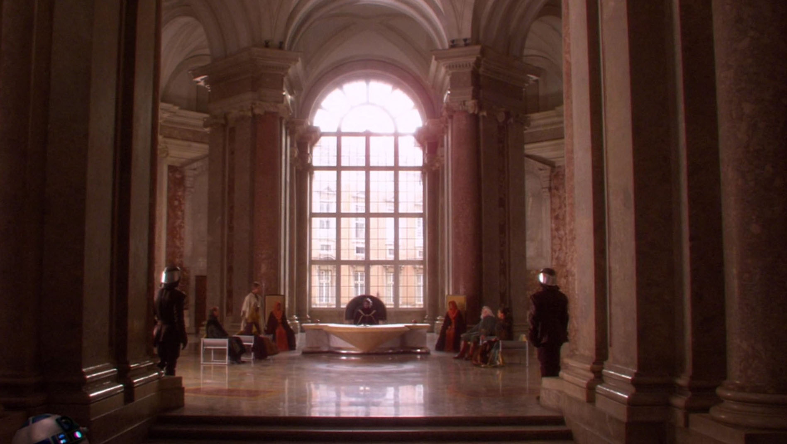
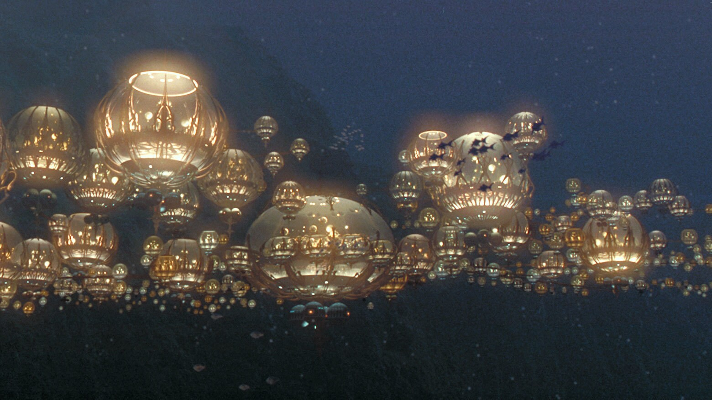

Petit monde géologiquement exceptionnel, Naboo est une planète dont la surface est constituée de lacs marécageux, de plaines vallonnées et de collines verdoyantes. Les cités fluviales sont resplendissantes avec leur architecture classique et leurs espaces verts, tandis que les colonies sous-marines des Gungans sont des occurrences exotiques de la technologie des bulles hydrostatiques.
|  |  |  |